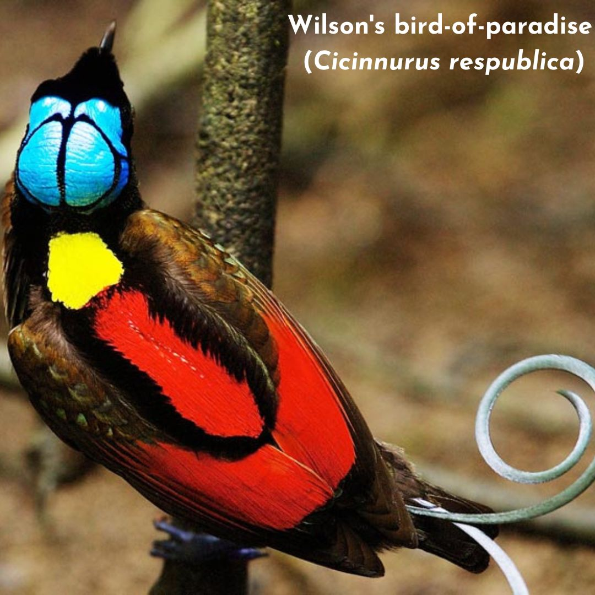
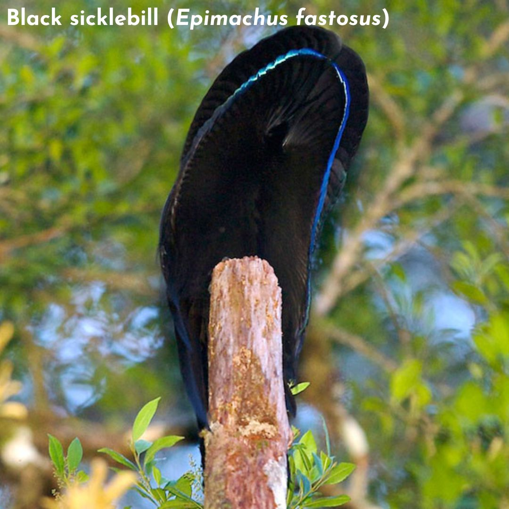
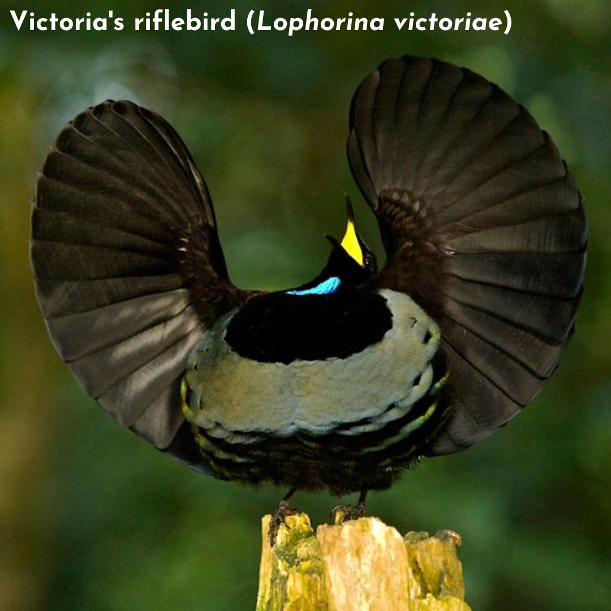
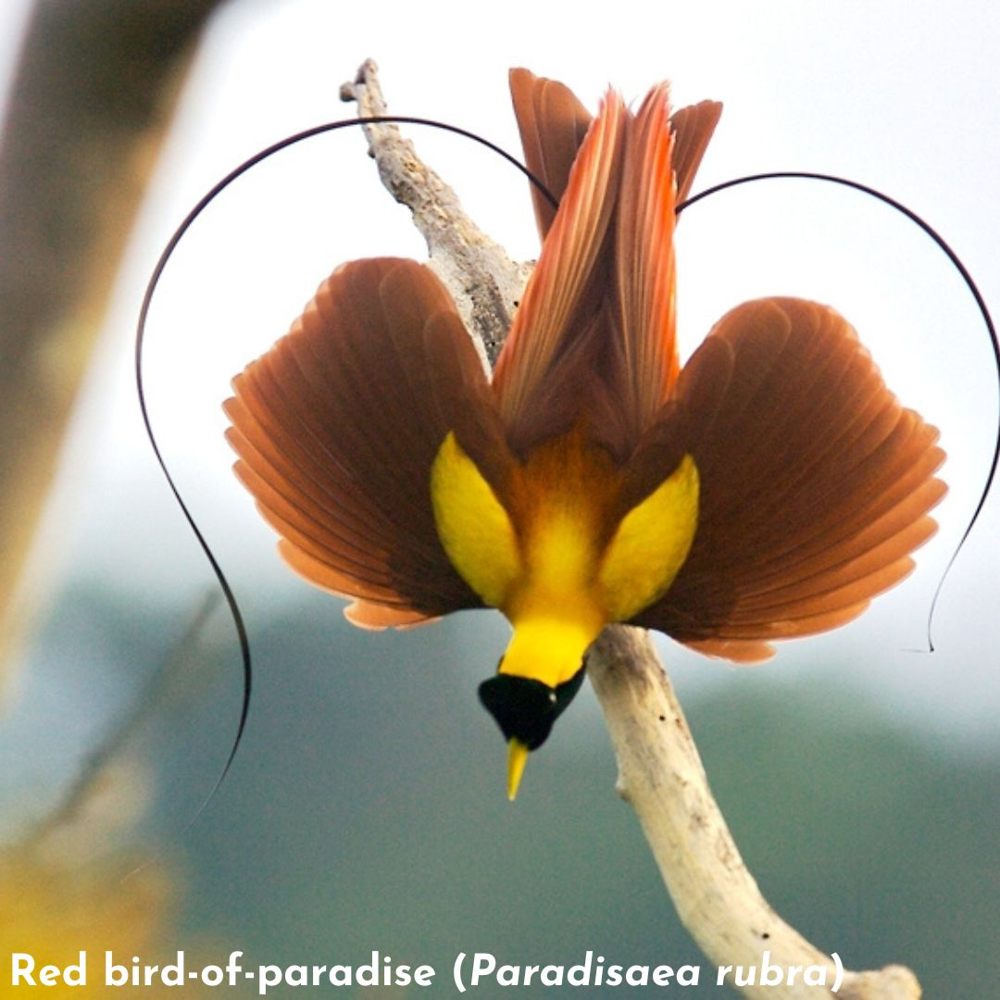
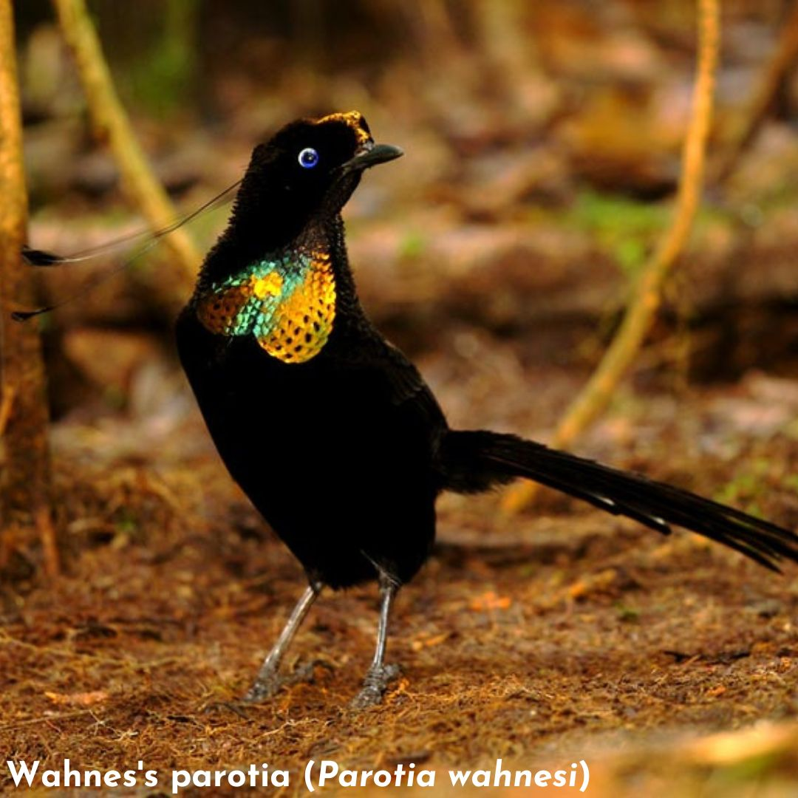
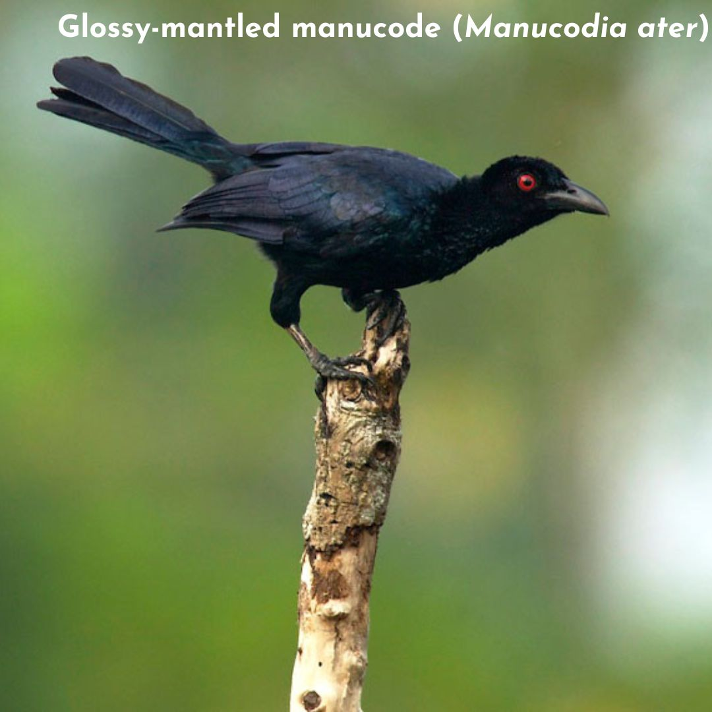
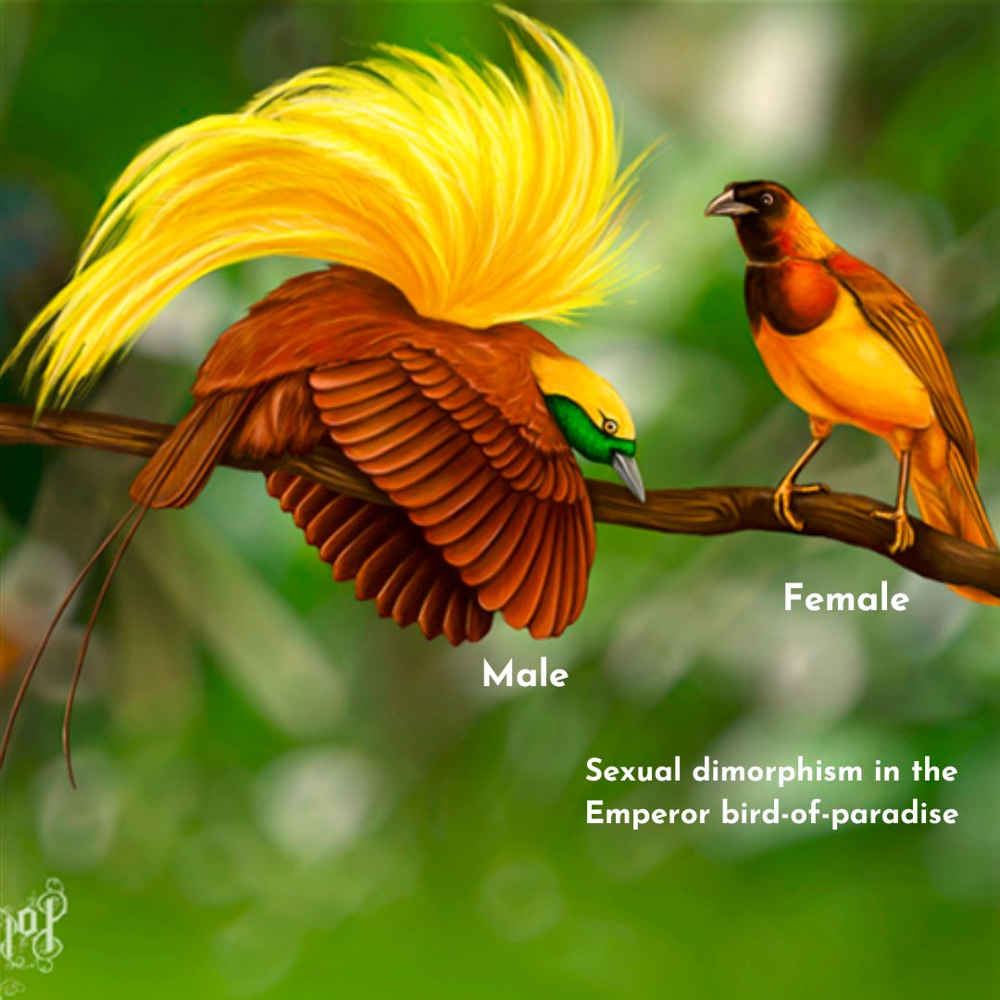
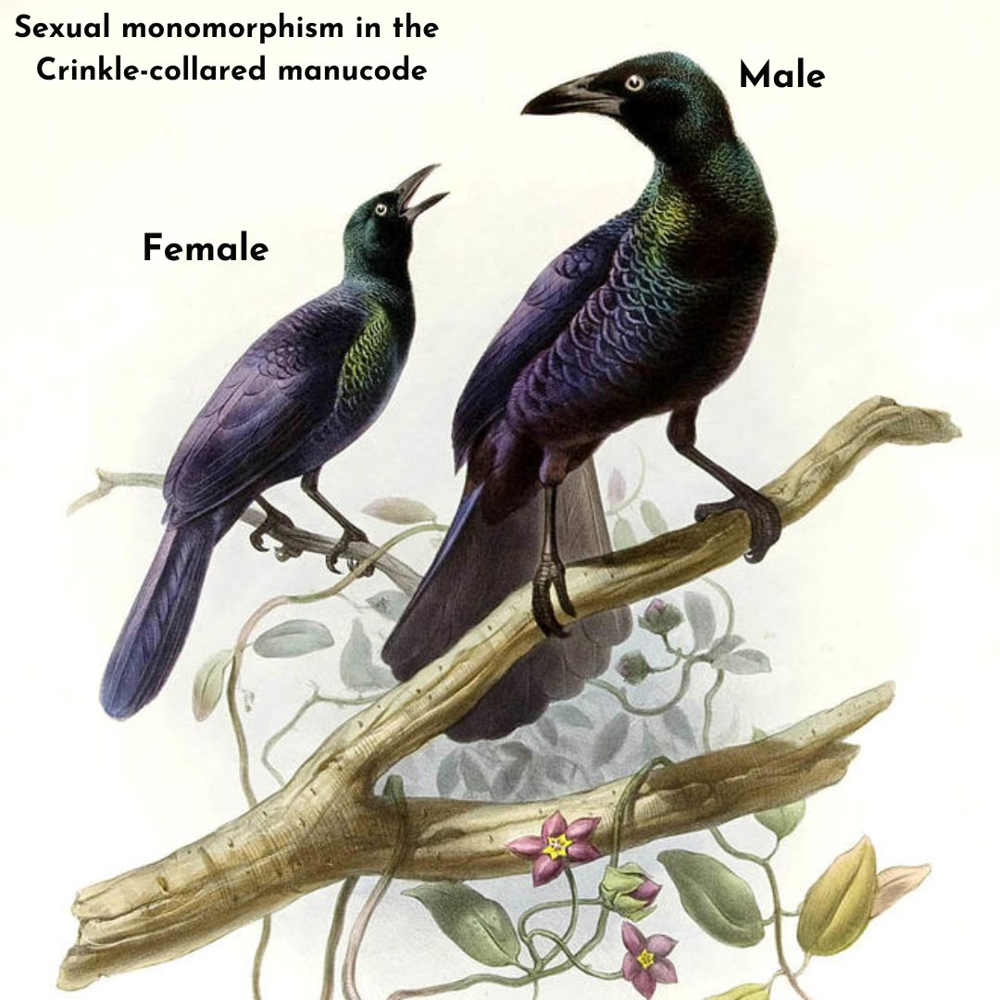

Charles Darwin proposed that all living species were derived from common ancestors. The primary mechanism he proposed to explain this fact was natural selection: organisms better adapted to their environment would have higher survival rates than the others. However, he also noted that there were many examples of elaborate and apparently non-adaptive sexual traits that would not aid in the survival of their bearers. He suggested that such traits might evolve if they are sexually selected, that is, if they increase the individual’s reproductive success, even at the expense of their survival.
Sexual selection is known to work via two mechanism: intrasexual selection, which is competition between members of the same sex for access to mates, and intersexual selection, where members of one sex choose from members of the opposite sex. During intrasexual selection, members of the same sex attempt to outcompete rivals, often during direct encounters, leading to the evolution of armaments such as deer antlers, beetle horns, and large body sizes that give advantage to individuals when fighting off potential competitors. Intersexual selection, on the other hand, can explain the evolution of elaborate mating displays and exaggerated morphological traits. Sex roles in sexual reproduction are defined by anisogamy, the differences in the gametes: females produce relatively few, highly nutritious gametes, whereas males produce abundant, smaller gametes. Because only a single gamete of each type is required to produce an offspring, an excess of male gametes do not fertilize any eggs. This asymmetry leads to Bateman’s principle, which states that female reproduction is primarily limited by their access to resources to nourish and produce gametes, whereas male reproduction is mainly limited by their access to females. Along with this, in species where parental care is required, the contribution of each sex to the care of the offspring also adds to the amount of investment done by the two sexes in reproduction. The sex/es involved in providing parental care are not immediately available to invest energy in pursuing additional mating opportunities; thus, the sex investing less in reproduction (hereafter ‘males’) typically compete among themselves for access to the individuals of the opposite sex (hereafter ‘females’), which tend to be choosy, evaluating physical and behavioral traits from potential mates to determine the mate that will maximize their fitness. The species under such high sexual selection pressure typically results in sexually dimorphic (males and females of the same species have significantly different appearance) traits that are exaggerated or elaborated to attract the females and increase the possibility of mating.
Most cases of sexual selection can be explained by the fact that females increase their reproductive success and fitness by mating with certain selected males. This happens via either acquiring direct benefits, for example, increased access to food, protection from harassing males, help in raising offspring, etc., or gaining indirect benefits via their offspring. The indirect benefits are usually genetic rather than resource based, by which the offsprings of females carry the ‘good’ genes from selected males that give them higher viability, fecundity, and reproductive success. The female preference has also been theorized to evolve for arbitrary traits that do not provide any information about the male’s quality and that therefore do not reinforce the effects of natural selection. If females randomly evolve a ‘biased’ preference for a particular trait in males, males bearing that trait get selected as mates more. This assortative mating is considered to establish a genetic correlation between the preference and the trait, thus giving an advantage to that arbitrary trait due to its covariance with the preference. Hence, by choosing a male with a particular trait value, the females gain the indirect benefit of producing male offspring that will be more sexually attractive (and thus fitter) to females that carry the preference in the next generation. This process can result in a runaway positive feedback loop, whereby the trait becomes more exaggerated as the selection on the preference increases.
The Birds-of-Paradise (hereafter BoPs) is the umbrella term for about 45 species of birds across 17 genera belonging to the family Paradisaeidae of the order Passeriformes. Most species are found in eastern Indonesia, Papua New Guinea, and eastern Australia. The family includes very diverse birds, from Sickle-tails, Sicklebills, Riflebirds, Paradisaeas, Parotia to Manucodes. Although sharing the common ancestors, the birds in this family show great variation in colors and plumages. In many species, the birds are sexually dimorphic : the males are garishly colored and have long, often modified, ornate feathers called nuptial plumes, whereas the females are drably colored: typically show no plumage specialization and are cryptically colored. Dimorphic species, like the Raggiana BoP, have been observed to be polygamous: the males are promiscuous, mating with as many females in one season as possible. After mating, the females receive no additional help from the males and rear their offspring alone. On the other hand, 9 out of the 45 species in the family that are sexually monomorphic (with very less or no difference in the male and female appearances) and dull-colored are known or thought to be monogamous: they form tight pair-bonds, both sexes cooperate in raising their young, and perhaps mate for life.
Along with the evolution of secondary sexual characters, these birds also show extreme diversity in their mating behaviors and displays. From very little or no signature mating display rituals in the monogamous species to very elaborate and competitive mating dances (eg., Lowes' Parotia) and vocalizations (eg., King-of-Saxony BoP) in polygamous birds, these birds continue to puzzle ecologists all over the world. Atleast eight species of BoPs are known to employ the rare courtship behavior known as lek display, in which group of males attend traditional courtship arenas where they display to females who visit solely for mating. BoPs can be divided into three types of leks: ‘solitary'- males display alone, ‘exploded lek’ - males spaced out by some 100s of meter distances, but both the males and females behave as a part of the lek, ‘true lek’ - males display in spatially tight aggregations as if competing.
These exaggerated features of hypercoloration, ornamentation, dimorphism, ritualistic mating displays, extreme vocalizations, social mating systems (monogamous/polygamous) and display systems (solitary/exploded leks/true leks) (Fig 1) provide an excellent opportunity to investigate how female choice influences the evolution of secondary sexual traits in males. I present a brief literature review of the research done to understand how sexual selection factors might have directed this extreme expression of secondary sexual traits in BoP males.
In his review article[2] from 1989 Scientific American, Dr Bruce M. Beehler studied the effect of anisogamy on polygamy and the ecological impact of foraging and diet on mating strategies. The study was carried out based on the field observations of over a decade on Papua New Guinea island. It provides one of the first reported observational evidence to establish a close relationship between the social mating system in BoP species and their dimorphism. The study concluded that sexual dimorphism arises due to strong selection pressure on the males of polygamous species, whereas the monogamous species show little to no evolution of flashy colors and are monomorphic. The study also focussed on the effect of the foraging and eating habits of birds of 9 BoP species on their mating strategies, specifically on their social mating system and the display systems. The fruits that BoPs eat can be primarily divided into two types: Simple, berry or figs-like fruits that are a source of water and carbohydrates, and Complex, nutmeg-like fruits that are protected from outside by tough capsules, are produced in small quantities and are extensive resource of fats and proteins. They are difficult to fetch but are valuable commodities for foraging birds. On the other hand, simple fruits show high spatial and temporal unpredictability and are poor sources of nutrients, implying that the females of the species that feed exclusively on simple fruits, like the Trumpet Manucodes, need the help of the male birds in order to collect enough fruits to feed themselves and the offsprings. Polygamous species like the Raggiana or the Magnificent BoP feed offsprings prominently the orthopods that the female can fetch herself without the males’ help. The study suggests that the shift from monogamy to polygamy has not occurred in the species whose diet contains the simple fig-like fruits exclusively.The predictability and nutrient content of complex fruits make it possible for females to provision their nestlings without the help of males and for males to shift to a promiscuous mating strategy. Along with the social mating system, the display systems of male BoPs are also affected by the foraging habits of females. Males of monogamous species show very little to no mating displays. In the polygamous species, however, the lek formation is significantly correlated to the foraging ranges of the females of that species. In the species where females forage long and wide, establishing overlapping ranges, males were found to display in large leks as the lekking display can attract wide-ranging and non-territorial females. Contrarily, in the species in which females forage in shorter distances and maintain their territory, the males were found to be displaying solitarily.
The 2018 study[3] by Dr Miles and Dr Fuxjager focuses on the evolution of visual mating signals, colors, and mating display gestures. It proposes and tests the hypothesis that the evolution of the integrated visual displays is modular, i.e., multiple evolutionary forces independently affect the complexity of different signal components and that distinct selection regimens independently shape each display component. Three display elements, 1) sexual dimorphism, 2) carotenoid and melanin ornamentation, and 3) gestural display complexity, are studied with the hypothesis that sexual selection by 1) female choice, 2) male–male competition, and 3) the signaling environment, each independently predict the complexity of different display elements. 36 out of 45 BoP are studied under these six parameters. Sexual dimorphism is studied by visually examining males and females of the same species and assigning the ‘dimorphism index’ equal to the number of body parts that show different appearances in the two sexes. The carotenoid and melanin ornamentation correspond respectively to the presence of carotenoid colors, like reds, yellows, and oranges, and melanin-based colors, like blacks, browns, and blues, in the plumages of the males. The index is the ratio of carotenoid-colored plumage patches to the total number of plumage patches. The gestural display complexity index is assigned by visually inspecting the video clips of the mating displays of various species of birds and breaking down the complexity of the actions into simpler, primary movements registered in a pre-published repertoire of distinct physical movements made during the mating displays. The mating displays with a higher number of unique physical maneuvers are given a higher complexity index. The female choice refers to the sexual selection by females in their mate choices. The male-male competition refers to the display systems of the male birds, with birds in true leks exposed to higher male-male competition and males that display solitarily exposed to less male-male competition. The signaling environment denotes the forest strata in which the males display, with display at ≤ 3 m from the forest floor called ‘understorey’ and display above that as ‘upper strata.’
Similar to the previous study, this study also concludes that the polygamous species (those that undergo stronger ‘female choice’) are more sexually dimorphic than monogamous species. Species in which multiple males display together (stronger ‘male-male competition’ for display space) have more red and yellow ornaments than those that display alone. This shows that intrasexual selection is associated with carotenoid pigmentations, whereas intersexual selection is with sexual dimorphism. It is also found that the display habitat and gestural display complexity are correlated, where species that signal in the forest understorey have more complex dances than those that signal in the upper strata. The signaling environment affecting visual displays can be explained as, the environmental noise, like light availability or visual range disruption, can prompt the evolution of more detectable displays and/or more sensitive receivers. Species displaying in the habitats associated with increased visual clutter, like forest understorey, thus evolve exaggerated display movements. This phenomenon likely arises because of the complex interactions between signal production, transmission, and reception, as sexual selection can only act on signals reliably propagated through the environment.
Altogether, the three findings above point to three distinct evolutionary drivers operating in tandem to guide divergence in three different components of an integrated visual display phenotype (Figure 2). This also confirms the hypothesis that BoP displays exhibit modularity of the visual display traits as the total complexity of integrated displays is found to be the result of multiple evolutionary forces acting synergistically rather than any one operating in isolation.
Another article from 2018[4] also takes a similar approach of the modular synergistic evolution of multiple sexual traits and studies the mating displays, vocalizations, and color-based ornamentation of 40 BoP species. Visually inspecting and rigorously analyzing a vast number of video clips, photos, and museum specimens of the 40 species, the study obtains quantitative diversity and richness metrics of ornamental complexity across BoPs(Fig 3).
The study finds positive correlations between color and acoustic diversity, and between mating display and acoustic diversity, insisting that selection has acted similarly on these axes of ornamental complexity (Fig 4). However, no significant relationship is found between color diversity and mating display diversity, indicating independent evolutionary trajectories for these visually encoded aspects of secondary sexual traits.
The study also found that the mating display richness and acoustic richness, but not color richness, were influenced by the stratum of the forest in which species display. Mating display richness exhibits a negative relationship with display habitat; species that display on the forest floor have the largest mating display repertoires, reasoned in the same way as in the previous study. BoPs also show increased acoustic richness as their display locations increase in height. This result partially corresponds to the prediction that the openness of the upper canopy favors increasingly complex acoustic displays. However, color diversity is not significantly influenced by display habitat.
The results that color and mating display evolution are independent of each other, and that color diversity is not significantly influenced by display habitat match well with the previous study results. The study concludes that selection favors correlated ornamental diversity across multiple signals in BoPs. This suggests strong sexual selection on functionally integrated (co-expressed traits) courtship phenotypes. It also suggests robustness in BoP courtship phenotypes via functional redundancy (two or more structures performing the same function) among these phenotypes. Systems in which the overall structure and interconnectedness of parts protect the functions from environmental or mutational instability such that a given function is not lost if a single component fails are the robust systems. Robustness increases evolvability by enabling elements to react to selection independently and diverge while maintaining original functions. The correlations among signal types within BoP courtship phenotypes are atleast partially responsible for the diversity displayed by them. Consequently, this study suggests that the inherent functional overlap and structural interdependency of courtship phenotypes partially lead to increased phenotypic diversification in BoPs.
These studies of BoPs provide observational evidences to how inter- and intra-sexual selection shape the color and ornamental diversity in BoPs. They also shed light on the effects of ecological factors like eating habits and display habitat in shaping the social mating and display systems and on the exaggeration of mating displays. They provide important insights into the modular nature of evolution of the integrated sexual traits and study of the redundancy in the evolution of visual and acoustic signals shows the evolutionary robustness of mating system at play. Regardless of numerous studies done on BoPs, the bewildering diversity of family and the extreme cases of body morphology still leave some questions regarding their evolution unanswered. Particularly, the biology of female choice is also understood to be just as extreme as the biology of male displays, and much less well understood. Thus, this family, at an extremely curated balance of the two evolutionary forces is sure to be at the ecologists' interests for years to come.
References:
1. Brennan, P. (2010) Sexual Selection. Nature Education Knowledge 3(10):79.
2. Beehler, B. M. (1989). The Birds of Paradise. Scientific American, 261(6), 116–123. http://www.jstor.org/stable/24987520
3. Miles MC, Fuxjager MJ. Synergistic selection regimens drive the evolution of display complexity in birds of paradise. J Anim Ecol. 2018;87: 1149–1159. pmid:29637997.
4. Ligon, R. A., Diaz, C. D., Morano, J. L., Troscianko, J., Stevens, M., Moskeland, A., ... & Scholes III, E. (2018). Evolution of correlated complexity in the radically different courtship signals of birds-of-paradise. PLoS biology, 16(11), e2006962.